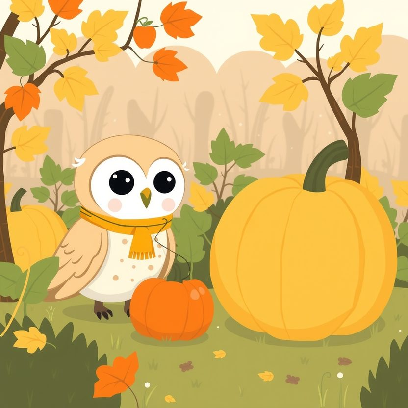

Titistoire › Les Étoiles (3-6 ans)
Plume et la plus grosse citrouille
Une histoire de Plume la chouette pour parler de : la jalousie.

▶ Écouter et regarder l'histoire
Gratuit, sans inscription : la voix lit, le texte suit mot à mot, les images tournent comme dans un album.
Le texte de l'histoire
Au printemps, Plume et Noisette plantent chacune une graine de citrouille, côte à côte, dans la terre toute fraîche. C'est pour le grand concours d'Halloween.
Plume fait tout comme dans les livres. Elle arrose le matin, elle parle à sa pousse le soir, et chaque jour, elle mesure sa citrouille avec un bout de ficelle.
Mais voilà l'automne. La citrouille de Plume est grosse comme une pomme. Celle de Noisette, grosse comme une brouette. « Et pourquoi ? » s'étonne Plume.
Tout le monde accourt pour admirer la citrouille de Noisette. « Quelle merveille ! » « Elle va gagner, c'est sûr ! » Noisette en sautille de joie.
Plume murmure « bravo ». Mais au même instant, quelque chose se serre dans son ventre. Un petit pincement. Froid, pointu, et un peu vert.
Le pincement lui souffle des choses à l'oreille. « C'est pas juste. Elle n'a même pas lu les livres. C'est de la chance, voilà tout. Tu mérites de gagner bien plus qu'elle. »
Les jours suivants, le pincement enfle. Quand Noisette vient jouer, Plume lui tourne le dos : elle est occupée. Quand Noisette rit, Plume trouve qu'elle rit trop fort.
« Tu es fâchée ? » s'inquiète Noisette. « Non. » « Tu es sûre ? » « J'ai dit non ! » Ce n'est pas un vrai non. Mais comment avouer à sa meilleure amie : je suis triste que tu sois contente ?
La nuit qui précède le concours, Plume ne trouve pas le sommeil. D'un coup d'aile, elle file jusqu'au potager. La grosse citrouille luit doucement sous la lune.
Elle trône en haut d'une petite pente, calée par un simple caillou. Le pincement chuchote : « Si le caillou bougeait… elle roulerait jusqu'au ruisseau. Plouf. Personne n'en saurait rien. »
Plume pose une patte sur le caillou. Il est froid. Une toute petite poussée suffirait.
Alors elle pense à Noisette, qui a traîné de lourds arrosoirs tout l'été, avec ses petits bras. À sa figure, demain matin, devant le potager vide. Plume retire sa patte d'un bond, comme si le caillou brûlait.
Elle se perche sur la barrière, toute tremblante. « Qu'est-ce que j'allais faire ? » Au-dedans, elle se sent laide. Si seulement elle pouvait arracher ce pincement et le jeter très loin !
« Plume ? » Une petite voix dans le noir, et la lueur d'une bougie. C'est Noisette, en chemise de nuit, qui ne trouvait pas le sommeil non plus. « Qu'est-ce que tu fais là ? »
Plume pourrait inventer une excuse. Elle regarde son amie bien en face, respire un grand coup, et elle dit la vérité, celle qui a tant de mal à sortir.
« Je suis jalouse. Ta citrouille est énorme et la mienne est ridicule. J'ai un pincement vert dans le ventre, et il me donne des idées affreuses. Pardon, Noisette. »
Noisette grimpe s'asseoir à côté d'elle. Un moment, elle reste muette, le nez dans les étoiles. Puis : « Moi, j'ai un pincement chaque fois que tu t'envoles. »
« Quoi ? » s'étrangle Plume. « Tu voles, toi. Tu vois la forêt d'en haut. Moi, je regarde d'en bas, et je pense : c'est pas juste. Je n'avais jamais osé t'en parler. »
Elles se regardent. Deux amies, deux pincements. Tout cela leur paraît soudain un peu bête, et elles se mettent à pouffer tout bas, pour ne pas réveiller les limaces.
Le lendemain, la citrouille de Noisette remporte le premier prix. Plume applaudit des deux ailes. Le pincement est encore là, tout rabougri. Mais maintenant qu'elle l'a dit, il ne commande plus.
« Et la tienne ? s'exclame Noisette. On ne va pas la laisser toute seule ! » Accroupies, elles contemplent la citrouille-pomme. Elle est vraiment minuscule.
Ensemble, elles la creusent. Elles lui taillent deux yeux et un sourire, puis elles y glissent une bougie. C'est la plus petite lanterne d'Halloween de toute la forêt.
Et comme elle ne pèse presque rien, Plume peut l'emporter dans les airs. « Monte ! » lance-t-elle. Noisette grimpe sur son dos, s'agrippe de toutes ses forces, et risque un œil.
Ce soir-là, ceux d'en bas voient filer une petite étoile orange au-dessus des arbres. Avec, tout là-haut, deux rires. La grosse citrouille, elle, est restée au potager. Elle était bien trop lourde pour voir ça.